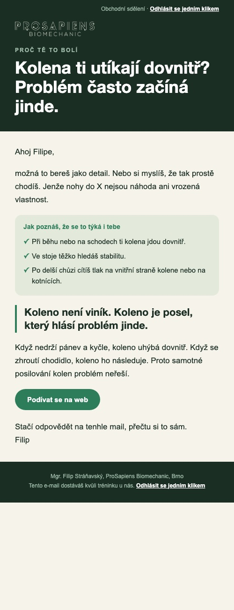

Prázdne miesto okolo mailu
Gmail na počítači je široký asi 1 400 bodov a mail má dnes 600, preto okolo neho zostáva sivá plocha. Text pritom nemôže ísť cez celú šírku, dlhý riadok sa zle číta. Riešenia sú tri. Obrázky sú skutočné vykreslenie toho istého mailu v okne veľkom ako Gmail.
Počítač
Telefón (návrh A)
